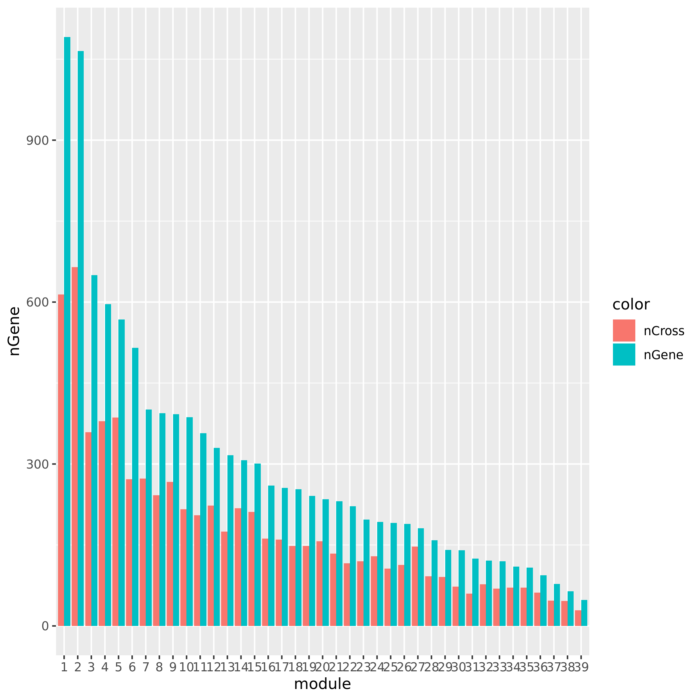

Log2021
Last updated: 2021-02-06
Checks: 7 0
Knit directory: GradLog/
This reproducible R Markdown analysis was created with workflowr (version 1.6.2). The Checks tab describes the reproducibility checks that were applied when the results were created. The Past versions tab lists the development history.
Great! Since the R Markdown file has been committed to the Git repository, you know the exact version of the code that produced these results.
Great job! The global environment was empty. Objects defined in the global environment can affect the analysis in your R Markdown file in unknown ways. For reproduciblity it’s best to always run the code in an empty environment.
The command set.seed(20201014) was run prior to running the code in the R Markdown file. Setting a seed ensures that any results that rely on randomness, e.g. subsampling or permutations, are reproducible.
Great job! Recording the operating system, R version, and package versions is critical for reproducibility.
Nice! There were no cached chunks for this analysis, so you can be confident that you successfully produced the results during this run.
Great job! Using relative paths to the files within your workflowr project makes it easier to run your code on other machines.
Great! You are using Git for version control. Tracking code development and connecting the code version to the results is critical for reproducibility.
The results in this page were generated with repository version 74c629e. See the Past versions tab to see a history of the changes made to the R Markdown and HTML files.
Note that you need to be careful to ensure that all relevant files for the analysis have been committed to Git prior to generating the results (you can use wflow_publish or wflow_git_commit). workflowr only checks the R Markdown file, but you know if there are other scripts or data files that it depends on. Below is the status of the Git repository when the results were generated:
Ignored files:
Ignored: .DS_Store
Ignored: .Rhistory
Ignored: .Rproj.user/
Ignored: analysis/.DS_Store
Ignored: code/.DS_Store
Ignored: data/.DS_Store
Ignored: output/.DS_Store
Note that any generated files, e.g. HTML, png, CSS, etc., are not included in this status report because it is ok for generated content to have uncommitted changes.
These are the previous versions of the repository in which changes were made to the R Markdown (analysis/Log2021.Rmd) and HTML (docs/Log2021.html) files. If you’ve configured a remote Git repository (see ?wflow_git_remote), click on the hyperlinks in the table below to view the files as they were in that past version.
| File | Version | Author | Date | Message |
|---|---|---|---|---|
| Rmd | 74c629e | Lili Wang | 2021-02-06 | wflow_publish(c(“analysis/Log2021.Rmd”, “docs/power.png”, “docs/Muscle_Skeleta.p.funcExplorer.png”)) |
| html | 86b2e82 | Lili Wang | 2021-02-02 | Build site. |
| Rmd | 0b5d8d3 | Lili Wang | 2021-02-02 | wflow_publish(c(“analysis/Log2021.Rmd”, “docs/modules.png”, “docs/Muscle_Skeleta.p.WGCNA.png”, |
| html | bb3c016 | Lili Wang | 2021-01-30 | Build site. |
| html | 83d3f1d | Lili Wang | 2021-01-30 | Build site. |
| Rmd | 3017262 | Lili Wang | 2021-01-30 | wflow_publish(c(“analysis/Log2021.Rmd”, “data/signals.all.txt”, |
| html | a753e96 | Lili Wang | 2021-01-26 | Build site. |
| Rmd | b7111b2 | Lili Wang | 2021-01-26 | wflow_publish(c(“analysis/Log2021.Rmd”, “docs/signalsv.s.FDR.png”)) |
| html | 1b48368 | Lili Wang | 2021-01-26 | Build site. |
| Rmd | 9526e7a | Lili Wang | 2021-01-26 | wflow_publish(c(“analysis/Log2021.Rmd”, “docs/signalsv.s.FDR.png”)) |
| html | 9b6da5c | Lili Wang | 2021-01-26 | Build site. |
| Rmd | 16f7005 | Lili Wang | 2021-01-26 | wflow_publish(c(“analysis/Log2021.Rmd”, “data/signals.all.txt”)) |
| html | 82152fd | Lili Wang | 2021-01-19 | Build site. |
| html | a364419 | Lili Wang | 2021-01-19 | Build site. |
| Rmd | b8815e3 | Lili Wang | 2021-01-19 | docs/nCross.png |
| html | 0611c35 | Lili Wang | 2021-01-19 | Build site. |
| Rmd | 11c79eb | Lili Wang | 2021-01-19 | Add simulation. |
| html | 51465ae | Lili Wang | 2021-01-17 | Build site. |
| Rmd | cc5fc28 | Lili Wang | 2021-01-17 | wflow_publish(“analysis/Log2021.Rmd”) |
| html | 1f9d60f | Lili Wang | 2021-01-17 | Build site. |
| Rmd | b4ce27b | Lili Wang | 2021-01-17 | Update GTEx. |
| html | 51b1a4c | Lili Wang | 2021-01-04 | Build site. |
| Rmd | 23d78aa | Lili Wang | 2021-01-04 | wflow_git_commit(c("analysis/_site.yml“,”analysis/index.Rmd", |
Jan 26
simulation
Methods: Oracle, PC1, PCO, MinP, minp.
Models: \(z \sim N(\sqrt{N} \beta, \Sigma)\). \(\beta \sim N(0, \sigma_{b}^2 I_{K \times K})\).
various sample size \(N\). 200, 400, 600, 800, 1000.
various \(\sigma_{b}^2\). 0.005, 0.01, 0.05, 0.1, 0.2.
various causality percentage. ???
simulation.
Generate \(10^4\) zscores under each model. \(10^4\) simulations.
The following plot gives the boxplot, mean plot with standard deviation, and mean plot with standard error of the mean. Which one to use?
power comparison
Larger FDR level, #signals in large and small module?
Here I will look at how the number of signals changes in the original large and current small modules when I increase the FDR level.
The plot below is based on Muscle tissue from GTEx_v8. The x-axis is for various FDR levels, including 5%, 10%, 15%, and 20%. The y-axis is for the number of signals under these FDR levels. I plot three types of signals, i.e. module and SNP pairs (left subplot), unique SNPs (middle subplot), independent SNPs (right subplot). The two colors represent our previous WGCNA modules (red) and current smaller WGCNA modules (blue).
We can observe (1) When increasing FDR levels, number of signals only increase a little bit, say 3-5 more signals. This means that the corrected pvalues are bipolar, i.e. either very small or very large. (2) Signals based on smaller modules are similar to that of previous standard modules.
Muscle: #signals v.s.FDR
| Version | Author | Date |
|---|---|---|
| 0b5d8d3 | Lili Wang | 2021-02-02 |
DGN: #signals v.s.FDR
| Version | Author | Date |
|---|---|---|
| 0b5d8d3 | Lili Wang | 2021-02-02 |
Smaller gene modules, more signals?
I changed the parameter deepSplit in function cutreeDynamic from package WGCNA to get modules with smaller size. I run it on the Muscle tissue from GTEx (see GTEx_v8.Muscle_Skeletal.WGCNA in the GTEx results table). Compared to GTEx_v8.Muscle_Skeletal, though more modules (32 v.s. 18), they have same independent signals (3), located on chr5, chr10, and chr22.
The corresponding modules of these signals from small and large WGCNA share a large proportion of genes.
| signal.Chr | module.small (#genes) | module.big (#genes) | #overlapped genes |
|---|---|---|---|
| chr5 | module21 (89) | module15 (114) | 88 |
| chr10 | module21 (89) | module15 (114) | 88 |
| chr22 | module2 (297) | module4 (350) | 257 |
The above table is for clusters obtained by method ‘WGCNA.min20_deep2’ (big) and ‘WGCNA.min20_deep4’ (small). Next, I give more info about the clusters by more methods, i.e. #genes in modules (A), #unclassfied genes (B), and #modules (C) by the six methods. I also give the pvalue distribution corresponding to these clusters below.
Generally, funcExplorer gives more modules, smaller module, and much more unclassified genes. Though the smaller modules, there aren’t many extreme pvalues. Say, the minimum p of all is about \(10^{-9}\), as compared to \(10^{-14}\) by other methods.
From the pvalue plot, it looks like ‘WGCNA.min10_deep4’ gives smaller clusters and some extreme pvalues. So next step I will run the whole pipleline for this setting.
Modules v.s. methods/parameters
p distribution of Muscle
| Version | Author | Date |
|---|---|---|
| 74c629e | Lili Wang | 2021-02-06 |
Jan 05, Jan 19
Simulation
The simulations here aim to compare the power of PC-based tests including PC1 (using only the primary PC) and PCO (using combined PC’s), and non-PC based test MinP. The simulations consist of two parts: (1) verify that type 1 error is well controlled; (2) compare power of tests. At this time, I simply assume there is no LD among SNPs, i.e. tests are independent.
- Verify that type 1 error is well controlled.
Since the tests are assumed to be independent, the null pvalues should be uniformly distributed. To verify that, I estimate the null pvalues by empirical p’s obtained from the following steps.
Step1. Generate \(z_0 \sim N(0, \Sigma) | H_0\).
Step2. Run tests including PC1, PCO, MinP for \(10^6\) times and obtain \(10^6\) p’s for each test.
Step3. Compute the empirical T1E at significance \(\alpha\) by \(\frac{I\{p<\alpha\}}{10^6}\). Draw qqplot of \(-log_{10}p\).
The correlation matrix \(\Sigma\) is the correlation of genes in module15 of GTEx dataset Muscle_Skeletal (Sigma.Muscle_Skeletal.module15.chr7.rds).
| alpha | PC1 | PCO M | inP |
|---|---|---|---|
| 5e-02 | 0.050356 | 0.053584 | |
| 1e-04 | 0.000093 | 0.000114 |
qqplot.simulation.null
| Version | Author | Date |
|---|---|---|
| 11c79eb | Lili Wang | 2021-01-19 |
- Compare power of tests.
To compare the power of non-/PC-based tests, I will run the oracle test in addition to PC1, PCO, and MinP to benchmark the power. It’s mentioned in the PCO paper that given a fixed correlation relationship among the phenotypes, the power of a test depends on the relationship bewteen the true effects (\(\beta\)) and the phenotype correlation (\(\Sigma\)). Therefore, to see which tests perform well in what cases, I will consider different models, including (1) \(\beta=10 u_1\); (2) \(\beta=4 u_k\); (3) \(\beta=1.5 u_K\); (4) \(\beta=rnorm(K)\); (5) \(\beta=rnorm(0.7K)\); (6) \(\beta=rnorm(0.3K)\).
Step1. Generate \(z_0 \sim N(\beta, \Sigma) | H_1\).
Step2. Run tests including Oracle, PC1, PCO, MinP for \(10^6\) times and obtain \(10^6\) p’s for each test.
Step3. Compute the power at significance \(\alpha\) by \(\frac{I\{p<\alpha\}}{10^6}\).
| Model | Oracle | PC1 | PCO | MinP |
|---|---|---|---|---|
| u1 | 0.946341 | 0.902540 | 0.746301 | |
| uPCO | 0.989835 | 0.050178 | 0.713434 | |
| uK | 0.953727 | 0.049719 | 0.054140 | |
| 100% | 1.000000 | 0.058867 | 0.945918 | |
| 70% | 1.000000 | 0.058910 | 0.580368 | |
| 30% | 0.999995 | 0.050201 | 0.149904 |
GTEx
Results
The table below summarizes all results I have so far, followed by figures of the distributions of pvalues in various datasets.
| Dataset | Nsample | All | Annotated | Filtered | Filtered_info | Final | Nmodule | FDR | Nperm | QTL_Module | unique_QTL | independent_QTL |
|---|---|---|---|---|---|---|---|---|---|---|---|---|
| DGN | 913 | 13634 | 11979 | 8120 | 0;165;1663;8073 | 3859 | 21 | combined chr+module | 20 | 659 | 623 | 40 |
| DGN_new | 913 | 13634 | 12585 | 9939 | 1;453;1798;8705 | 3695 | 19 | combined chr+module | 10 | 331 | 275 | 26 |
| TCGA | 788 | 17656 | 15994 | 12694 | 336;3504;10697;598 | 4962 | ||||||
| GTEx_v8.Whole_Blood | 670 | 20315 | 20315 | 15245 | 619;4544;3677;13096 | 5070 | 22 | combined chr+module | 10 | 4 | 4 | 2 |
| GTEx_v8.Muscle_Skeletal | 706 | 21031 | 21031 | 15601 | 675;4447;3631;13490 | 5430 | 18 | combined chr+module | 10 | 38 | 38 | 3 |
| GTEx_v8.Skin_Sun_Exposed_Lower_leg | 605 | 25196 | 25196 | 18801 | 807;6458;4557;15650 | 6395 | 30 | combined chr+module | 10 | 1 | 1 | 1 |
| GTEx_v8.Artery_Tibial | 584 | 23304 | 23304 | 17390 | 795;5588;4202;14730 | 5914 | 20 | combined chr+module | 10 | 0 | 0 | 0 |
| GTEx_v8.Muscle_Skeletal.cross | 706 | 21031 | 21031 | 7141 | 675;4447;3631;0 | 13890 | 39 | combined chr+module | 10 | 43 | 43 | 4 |
| GTEx_v8.Muscle_Skeletal.WGCNA | 706 | 21031 | 21031 | 15601 | 675;4447;3631;13490 | 5430 | 32 | combined chr+module | 10 | 44 | 44 | 3 |
| DGN_new.WGCNA | 913 | 13634 | 12585 | 9939 | 1;453;1798;8705 | 3695 | 40 | combined chr+module | 10 | |||
| TCGA_new |
DGN
| Version | Author | Date |
|---|---|---|
| b110975 | Lili Wang | 2020-12-17 |
DGN_new
| Version | Author | Date |
|---|---|---|
| 361c43e | Lili Wang | 2021-01-04 |

Whole_Blood
| Version | Author | Date |
|---|---|---|
| 361c43e | Lili Wang | 2021-01-04 |
Muscle_Skeletal
| Version | Author | Date |
|---|---|---|
| 361c43e | Lili Wang | 2021-01-04 |
Skin_Sun_Exposed_Lower_leg
| Version | Author | Date |
|---|---|---|
| 361c43e | Lili Wang | 2021-01-04 |
Artery_Tibial
| Version | Author | Date |
|---|---|---|
| 361c43e | Lili Wang | 2021-01-04 |
Muscle_Skeletal.cross
| Version | Author | Date |
|---|---|---|
| 60cf10e | Lili Wang | 2021-01-17 |
Remarks
The dataset “DGN_new” represents DGN through the standard filtering (see “Gene filter” on Dec 10).
GTEx datasets generally have few significant signals and relatively large pvalues (compared to DGN).
The dataset “GTEx_v8.Muscle_Skeletal.cross” uses Muscle_Skeletal samples from GTEx_v8 (similar as GTEx_v8.Muscle_Skeletal), but without removing cross-mapped genes before constructing gene modules. Therefore, there are 13890 genes (v.s. 5430 in GTEx_v8.Muscle_Skeletal) in total which result in 39 modules (v.s. 18 in GTEx_v8.Muscle_Skeletal). We do this step because we observed that there are relatively few signals using our original pipeline and we wonder if the reason to this observation is us filtering too many genes in the first step and leaving too few signals. To check on this, we put the “filtering” to the last step, i.e. including potentially cross-mapped genes into the analysis and generate significant variant-module pairs. We then exclude those where target eGene in the module is cross-mappable with any gene within 1Mb of the variant. Hopefully we could have more signals.
However, though the increased genes and modules, the number of identified signals (43) is similar as that using the original pipeline (38). Next, I will look into these signals.
| variant-module | p | q |
|---|---|---|
| module15:10:48930105 | 8.63e-10 | 8.33e-03 |
| module15:5:132440814 | 1.56e-09 | 2.16e-02 |
| module15:5:132448891 | 3.36e-09 | 4.74e-02 |
| module15:5:132450078 | 5.81e-12 | 0.00e+00 |
| module15:5:132450726 | 5.96e-12 | 0.00e+00 |
| module15:5:132450916 | 8.89e-12 | 0.00e+00 |
| module15:5:132451361 | 5.97e-11 | 0.00e+00 |
| module15:5:132451586 | 1.11e-11 | 0.00e+00 |
| module15:5:132453865 | 1.05e-12 | 0.00e+00 |
| module15:5:132454053 | 9.94e-13 | 0.00e+00 |
| module15:5:132454171 | 1.03e-12 | 0.00e+00 |
| module15:5:132454631 | 1.44e-12 | 0.00e+00 |
| module15:5:132454724 | 1.08e-12 | 0.00e+00 |
| module15:5:132455672 | 1.07e-12 | 0.00e+00 |
| module15:5:132455979 | 1.04e-12 | 0.00e+00 |
| module15:5:132456154 | 9.96e-13 | 0.00e+00 |
| module15:5:132456710 | 6.04e-11 | 0.00e+00 |
| module15:5:132458606 | 5.33e-11 | 0.00e+00 |
| module15:5:132459905 | 4.84e-11 | 0.00e+00 |
| module15:5:132459971 | 5.04e-11 | 0.00e+00 |
| module15:5:132460190 | 5.05e-11 | 0.00e+00 |
| module15:5:132460375 | 5.56e-11 | 0.00e+00 |
| module15:5:132460917 | 5.03e-11 | 0.00e+00 |
| module15:5:132461111 | 5.17e-11 | 0.00e+00 |
| module15:5:132463834 | 5.47e-11 | 0.00e+00 |
| module15:5:132464413 | 3.90e-11 | 0.00e+00 |
| module15:5:132464907 | 1.01e-12 | 0.00e+00 |
| module15:5:132466034 | 4.56e-11 | 0.00e+00 |
| module15:5:132468333 | 1.32e-10 | 0.00e+00 |
| module15:5:132468353 | 5.74e-11 | 0.00e+00 |
| module15:5:132468564 | 8.53e-11 | 0.00e+00 |
| module15:5:132469724 | 5.63e-11 | 0.00e+00 |
| module15:5:132469899 | 6.96e-11 | 0.00e+00 |
| module15:5:132470043 | 1.03e-10 | 0.00e+00 |
| module15:5:132470796 | 5.42e-11 | 0.00e+00 |
| module15:5:132471932 | 8.01e-11 | 0.00e+00 |
| module15:5:132474927 | 2.71e-10 | 2.94e-03 |
| module4:22:23508295 | 3.76e-10 | 5.71e-03 |
| variant-module | p | q |
|---|---|---|
| module8:1:123955560 | 9.97e-12 | 0.00e+00 |
| module8:1:123955561 | 1.06e-11 | 0.00e+00 |
| module8:16:36353041 | 3.49e-11 | 6.67e-03 |
| module8:16:36353056 | 8.29e-11 | 1.25e-02 |
| module8:5:132453865 | 1.56e-09 | 3.12e-02 |
| module8:5:132454053 | 1.59e-09 | 2.86e-02 |
| module8:5:132454171 | 1.52e-09 | 3.33e-02 |
| module8:5:132454631 | 1.43e-09 | 3.57e-02 |
| module8:5:132454724 | 1.53e-09 | 3.23e-02 |
| module8:5:132455672 | 1.50e-09 | 3.45e-02 |
| module8:5:132455979 | 1.56e-09 | 3.03e-02 |
| module8:5:132456154 | 1.78e-09 | 3.42e-02 |
| module8:5:132456710 | 1.36e-09 | 3.33e-02 |
| module8:5:132458606 | 3.37e-10 | 1.76e-02 |
| module8:5:132459905 | 6.50e-10 | 1.74e-02 |
| module8:5:132459971 | 3.92e-10 | 1.43e-02 |
| module8:5:132460190 | 3.50e-10 | 1.58e-02 |
| module8:5:132460375 | 3.37e-10 | 1.67e-02 |
| module8:5:132460917 | 3.98e-10 | 1.36e-02 |
| module8:5:132461111 | 3.57e-10 | 1.50e-02 |
| module8:5:132463834 | 8.21e-10 | 2.40e-02 |
| module8:5:132464413 | 9.93e-10 | 2.69e-02 |
| module8:5:132466034 | 6.75e-10 | 1.67e-02 |
| module8:5:132468333 | 1.86e-09 | 3.50e-02 |
| module8:5:132468353 | 1.69e-09 | 3.06e-02 |
| module8:5:132468564 | 2.43e-09 | 4.19e-02 |
| module8:5:132469724 | 1.93e-09 | 3.66e-02 |
| module8:5:132469899 | 1.73e-09 | 3.24e-02 |
| module8:5:132470043 | 1.56e-09 | 2.94e-02 |
| module8:5:132470796 | 1.85e-09 | 3.33e-02 |
| module8:5:132471932 | 2.37e-09 | 4.29e-02 |
| module8:5:46659000 | 9.86e-13 | 0.00e+00 |
| module8:5:46906585 | 2.34e-11 | 7.14e-03 |
| module8:5:47027928 | 0.00e+00 | 0.00e+00 |
| module8:5:47068540 | 0.00e+00 | 0.00e+00 |
| module8:5:47166316 | 3.33e-16 | 0.00e+00 |
| module8:5:47210790 | 0.00e+00 | 0.00e+00 |
| module8:5:47210990 | 0.00e+00 | 0.00e+00 |
| module8:5:47258679 | 4.44e-16 | 0.00e+00 |
| module8:5:47258917 | 3.33e-16 | 0.00e+00 |
| module8:5:49809727 | 2.70e-13 | 0.00e+00 |
| module8:5:49930686 | 0.00e+00 | 0.00e+00 |
| module8:5:49936394 | 1.10e-11 | 0.00e+00 |
For GTEx_v8.Muscle_Skeletal, there are 38 variant-module pairs, corresponding to 2 module (module 15, module4) and 3 independent loci on (chr5, chr10, chr22). GTEx_v8.Muscle_Skeletal.cross has 43 variant-module pairs, corresponding to 1 module (module 8) and 4 independent loci on (chr1, chr5, chr16).
The signal on chr5 is significant for both module 15 (114 genes) and module 8 (394 genes) in two datasets, which have 82 shared genes. Take SNP rs2706381 (chr5:132474927) for example. It is “in cis with IRF1 (\(P \le 2\times10^{-10}\); Fig. 6c), a transcription factor that facilitates regulation of the interferon-induced immune response”. It is also “associated in trans with PSME1 (\(P \le 1.1\times10^{-11}\)) and PARP10 (\(P \le 7.8\times10^{-10}\))”. These two genes are included in module 15. The reference also gives additional results to “suggest that cis-regulatory loci affecting IRF1 are regulators of interferon-responsive inflammatory processes involving genes including PSME1 and PARP10, with implications for complex traits specific to muscle tissue”.
I also looked at the enrichment of the genes in module 15. These genes are mainly enriched in immunity-related terms and tuberculosis. To reproduce, use the gene list here.
SNP 10:48930105. module 15.
module4:22:23508295
Check if the signals’ nearby genes are cross-mapped with genes in their corresponding module. The signal on chr5 corresponding to module8 has 20 genes +/- 500Kb away from its TSS. Many of them are crosspable with genes in the module 8. The number of of genes in the module crossmapped with each of the 20 genes are:
1, 144, 0, 62, 54, 0, 63, 4, 0, 0, 0, 59, 145, 0, 0, 128, 0, 23, 53, where the nearest gene is crossmappable with 1 gene in the module.The other signals on chr1, chr16, and chr5:47210790 don’t have any nearby genes around its TSS.
See the following plot for number of cross-mapped genes in each module.

| Version | Author | Date |
|---|---|---|
| d22021e | Lili Wang | 2021-01-19 |
New TCGA by the standard filtering
eQTLGen
eQTLGen description
This full dataset includes 19942 genes that showed expression in blood tested and 10317 SNPs that are trait-associated SNPs based on GWAS Catalog.
After gene filter steps described in
Dec 10, there are 4963 genes left. Applying the same filtering to 13634 DGN genes, there are 3695 genes left, among which 3642 are also included in eQTLGen. So, I will use these genes to do the downstream analysis, e.g. constructing co-expressed gene modules. These 3642 genes result in 19 gene modules.Replication of DGN signals in eQTLGen
The table below gives the signals found in eQTLGen and DGN.
The first two rows give results based on eQTLGen zscores, with row 1 using
qvaluefor FDR correction (threshold \(0.05\)) and row 2 using \(\frac{0.05}{\#DGN signals}\) as significance threshold. The third row is based on the same gene modules and SNPs but tensorQTL zscores using DGN expression data. The FDR correction uses the empirical distribution of pvalues from the combined chr’s and modules (10 permutations).
| Dataset | FDR | minp | (QTL, module) | unique QTL | independent QTL |
|---|---|---|---|---|---|
| eQTLGen | qvalue | 5.82e-04 | 2195 | 909 | 348 |
| eQTLGen | 0.05/#DGN signals | 1.18e-04 | 1707 | 762 | 286 |
| eQTLGen_DGN | combined chr+module #10-perms | 1.00e-07 | 420 | 374 | 28 |
Among 374 eQTLGen_DGN signals, 16 are replicated in 762 eQTLGen signals. These 16 replicated signals consists of 6 independent SNPs, including (based on GRCh37),
- rs12485738 : 3:56865776, intron variant of ARHGEF3.
- rs643381 : 6:139839423. (rs590856, 6:139844429).
- rs149007767 7:50370254: , intron variant of IKZF1.
- rs12718597 : 7:50428428, intron variant of IKZF1.
- rs35979828 : 12:54685880, 500B downstream variant of NFE2.
- rs7210990 : 17:16170764, intron variant of PIGL.
- Replication of DGN signals in eQTLGen
DGN
| Version | Author | Date |
|---|---|---|
| 60cf10e | Lili Wang | 2021-01-17 |
R version 3.6.3 (2020-02-29)
Platform: x86_64-apple-darwin15.6.0 (64-bit)
Running under: macOS Catalina 10.15.6
Matrix products: default
BLAS: /Library/Frameworks/R.framework/Versions/3.6/Resources/lib/libRblas.0.dylib
LAPACK: /Library/Frameworks/R.framework/Versions/3.6/Resources/lib/libRlapack.dylib
locale:
[1] en_US.UTF-8/en_US.UTF-8/en_US.UTF-8/C/en_US.UTF-8/en_US.UTF-8
attached base packages:
[1] stats graphics grDevices utils datasets methods base
other attached packages:
[1] workflowr_1.6.2
loaded via a namespace (and not attached):
[1] Rcpp_1.0.4 rprojroot_1.3-2 digest_0.6.25 later_1.0.0
[5] R6_2.4.1 backports_1.1.5 git2r_0.27.1 magrittr_1.5
[9] evaluate_0.14 highr_0.8 stringi_1.4.6 rlang_0.4.7
[13] fs_1.3.2 promises_1.1.0 whisker_0.4 rmarkdown_2.1
[17] tools_3.6.3 stringr_1.4.0 glue_1.3.2 httpuv_1.5.2
[21] xfun_0.12 yaml_2.2.1 compiler_3.6.3 htmltools_0.4.0
[25] knitr_1.28